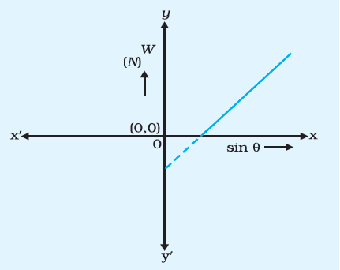

Inclined Plane
सिमुलेशन
प्रेक्षण सारणी
१ . गुरुत्वीय त्वरण ( g ) =
२ . रोलर का द्रव्यमान ( M ) =
| क्रम संख्या | θ | sin θ | लोड का द्रव्यमान ( m ) | लोड द्वारा अध्यारोपित भार (W = m * g ) |
| १ | ||||
| २ | ||||
| ३ | ||||
| ४ |
ग्राफ आलेखित करना करना

sin θ तथा भार ( W ) के मध्य ग्राफ आलेखित कीजिये।
परिणाम
sin θ तथा W के मध्य ग्राफ एक सरल रेखा होगा। अतः रोलर पर आनत समतल के अनुदिश अधोमुखी बल (W), आनति कोण के sin θ के अनुक्रमानुपाती होता है। इस रेखा की प्रवणता रोलर के द्रव्यमान के बराबर होगी।
सावधानियां
१ . सिमुलेशन को कार्यविधि में दिए गए निर्देशों के अनुसार ही चलाएं।
२ . स्लाइडर की धीरे-धीरे खिसकाना चाहियें।
३ . सिमुलेशन नहीं चलने की स्थिति में सिमुलेशन को रीसेट बटन के उपयोग से फिर से चलाइये।
४. रीडिंग तभी ले जब रोलर पूर्णतः संतुलन की अवस्था में हो।
Licensed under the Creative Commons Attribution Share Alike License 4.0